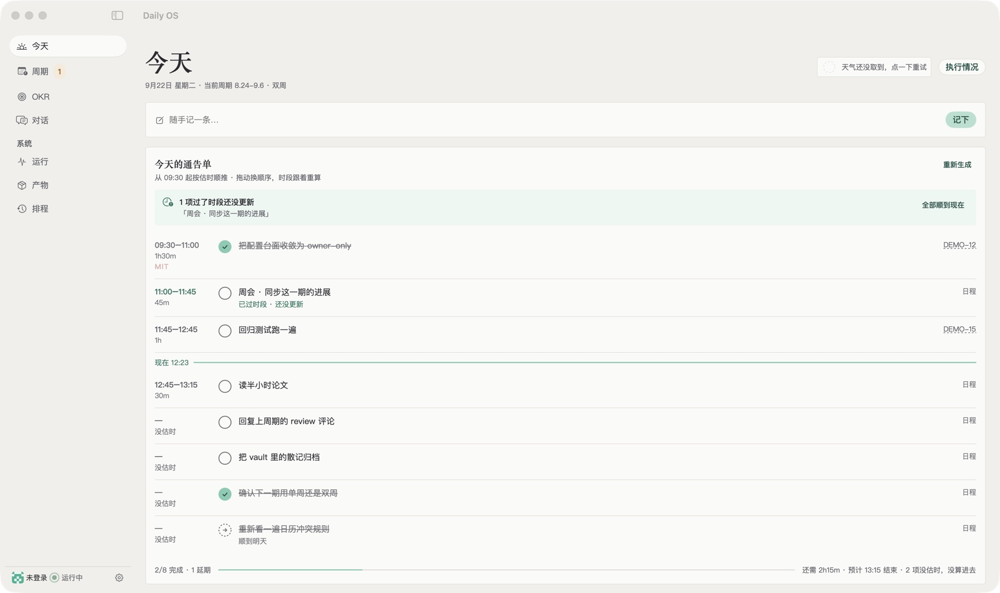
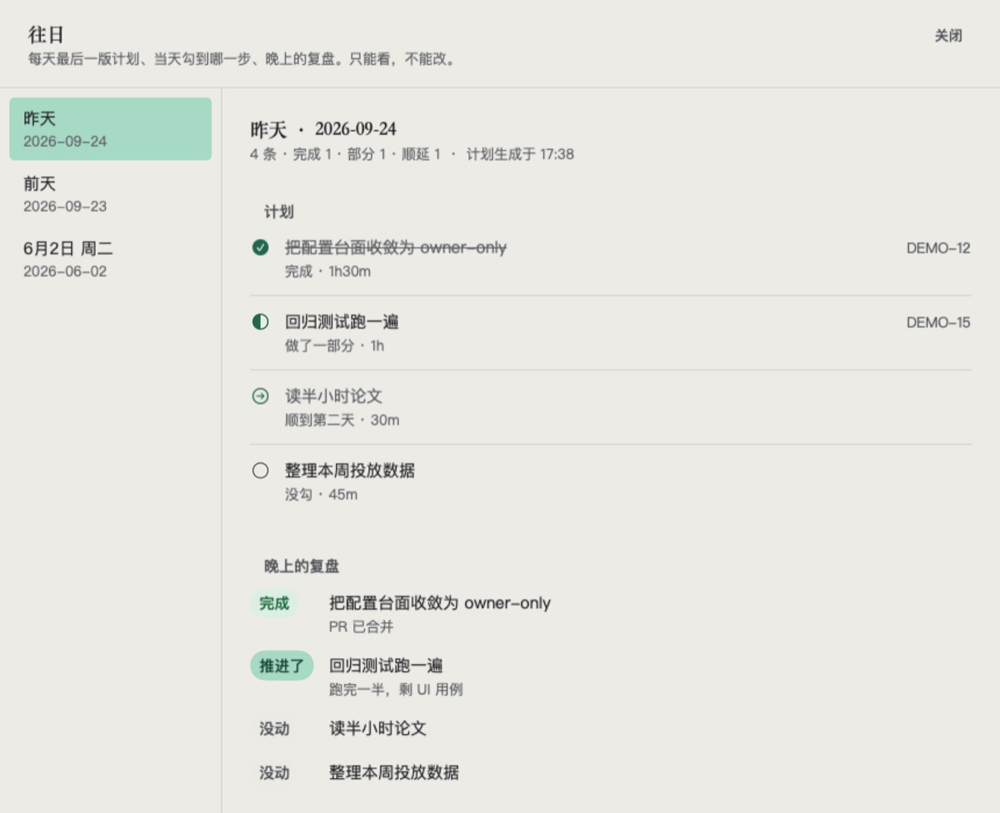

立足当下，
着眼未来。
Daily OS 以《高效能人士的七个习惯》为核心思想，从你自定义的数据源出发，把五年、一年、季度 OKR 拆成每个周期、每一天的任务安排。本机部署，个人数据和任务都在你自己手里；定期计划、定期复盘，让工作和生活有条不紊。
目前需要从源码安装：Node.js 22+、飞书（lark-cli 或自建应用）、Codex CLI 或 OpenAI API key。

它每天替你做的事
计划是草稿，复盘有依据，写回之前先问你。
生成今天的通告单
汇总飞书日历和任务、GitHub 指给你的 issue、Linear 的工作项和本地笔记，按估时从早排到晚，标出今天最重要的那一件（MIT）。
晚上对账复盘
对照计划和你当天勾掉的进度，分成完成、推进了、没动三类。没做完的顺到明天，不会悄悄消失。
三层 OKR 与周期复盘
五年 North Star、年度、当期三层 OKR 存在本地。每周出下周安排，每两周算一次 KR 进度增量，在飞书里点确认后才写回。
在飞书里直接操作
在聊天里发命令、点卡片：记一条、查状态、让它现在出计划、复盘或周报，不用打开别的应用。
原生 macOS 客户端
今天、周期、OKR、往日记录和菜单栏项。读的是你本机服务的真实数据，浅色深色都有。
团队只读同步
队友各自在自己的机器上跑，今日计划推送过来只读展示，谁也改不了谁的。
每一天都留得住
往日页面保存每天最后一版计划、当天勾到哪一步、晚上的复盘。只能看，不能改。
- 完成、做了一部分、顺延、没动，四种状态分开记
- 复盘附一句原因，比如「PR 已合并」「跑完一半，剩 UI 用例」
- 这些记录就是周复盘和 OKR 进度的依据

怎么用
配好一次，之后每天在飞书里收计划、回进度就行。
- 在 Mac 上装好服务clone 服务仓库，
npm ci后运行npm run setup，按引导连上飞书和你要用的数据源。 - 先试一次，不发送
npm run plan -- --no-send看看生成的计划，内容满意再打开真实发送。 - 装成后台服务由
launchd开机自启。Mac 睡眠错过的任务，醒来后当天会补跑。 - 每天在飞书里用早上收计划，白天回进度，晚上收复盘，周末收下周安排。
数据留在你的机器上
Daily OS 没有云端账号，也没有它自己的服务器。
| 东西 | 放在哪 |
|---|---|
| 配置、token、飞书 ID | 本机 .env 和 config/config.yaml，不进 git |
| 记忆、计划、复盘记录 | 本机数据目录 |
| 生成计划用的模型 | 你自己登录的 Codex CLI，或你自己的 OpenAI API key |
| 日历写入 | 先出草稿，你确认之后才写 |
开源
daily-os-backend
服务端：调度、数据源、飞书交互、本地控制台。AGPL-3.0。
daily-os-macos
原生 macOS 客户端和共享设计系统。MIT。
常见问题
需要什么环境？
一台 Mac、Node.js 22 以上、本机已登录的 Codex CLI（或一个 OpenAI API key），以及已登录的 lark-cli 或一个飞书自建应用。想在飞书聊天里直接发命令、点卡片，需要自建应用的 App ID 和 App Secret。
我的数据会上传到哪里？
服务跑在你自己的 Mac 上，配置、记忆和 token 都存在本机被 git 忽略的文件里。生成计划时，相关内容会发给你自己配置的模型（Codex CLI 或 OpenAI API），输出发到你自己的飞书。
收费吗？
免费。服务端以 AGPL-3.0 开源，macOS 客户端以 MIT 开源。
支持 Windows 或网页版吗？
目前只支持 macOS。服务自带一个本地浏览器控制台，iOS 客户端在开发中。